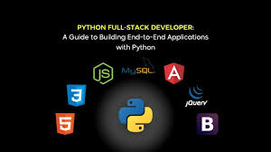

A blog (a truncation of "weblog")[1] is an informational website consisting of discrete,
often informal diary-style text entries (posts).
Posts are typically displayed in reverse chronological order so that the most recent post appears first, at the top of the web page.
In the 2000s, blogs were often the work of a single individual, occasionally of a small group, and often covered a single subject or topic. In the 2010s,
"multi-author blogs" (MABs) emerged, featuring the writing of multiple authors and sometimes professionally edited.
MABs from newspapers, other media outlets,
universities, think tanks, advocacy groups, and similar institutions account for an increasing quantity of blog traffic. The rise of Twitter and other "microblogging"
systems helps integrate MABs and single-author blogs into the news media. Blog can also be used as a verb, meaning to maintain or add content to a blog.
The emergence and growth of blogs in the late 1990s coincided with the advent of web publishing tools that facilitated the posting of content by non-technical users who did not have much experience with HTML or computer programming.
Previously, knowledge of such technologies as HTML and File Transfer Protocol had been required to publish content on the Web,
and early Web users therefore tended to be hackers and computer enthusiasts.
As of the 2010s, the majority are interactive Web 2.0 websites,
allowing visitors to leave online comments,
and it is this interactivity that distinguishes them from other static websites.
[2] In that sense, blogging can be seen as a form of social networking service. Indeed, bloggers not only produce content to post on their blogs but also often build social relations with their readers and other bloggers.
[3] Blog owners or authors often moderate and filter online comments to remove hate speech or other offensive content.
There are also high-readership blogs which do not allow comments.
| sno | Name of the technology | useage | applications | number of users |
|---|---|---|---|---|
| 1 | Java programming | Web devlopment | spotify | 26.9 million |
| 2 | python programming | web and app devlopment | Dropbox | 8.2 million |
| 3 | MERN stack programming | Web devlopments | Chat app | 20 milion |

Java is a high-level, class-based, object-oriented programming language that is designed to have as few implementation dependencies as possible.
It is a general-purpose programming language intended to let programmers write once, run anywhere (WORA),
[16] meaning that compiled Java code can run on all platforms that support Java without the need to recompile.
[17] Java applications are typically compiled to bytecode that can run on any Java virtual machine (JVM)
The syntax of Java is similar to C and C++, but has fewer low-level facilities than either of them.
The Java runtime provides dynamic capabilities (such as reflection and runtime code modification)
that are typically not available in traditional compiled languages..

Python was conceived in the late 1980s[42] by Guido van Rossum at Centrum Wiskunde & Informatica (CWI) in the Netherlands as a successor to the ABC programming language,
which was inspired by SETL,.
capable of exception handling and interfacing with the Amoeba operating system.[12] Its implementation began in December 1989.
[44] Van Rossum shouldered sole responsibility for the project, as the lead developer, until 12 July 2018,
when he announced his "permanent vacation" from his responsibilities as Python's "benevolent dictator for life" (BDFL),
a title the Python community bestowed upon him to reflect his long-term commitment as the project's chief decision-maker[45]
(he has since come out of retirement and is self-titled "BDFL-emeritus").
In January 2019, active Python core developers elected a five-member Steering Council to lead the project.[46][47]

MEAN (MongoDB, Express.js, AngularJS (or Angular), and Node.js)
is a source-available JavaScript software stack for building dynamic web sites and web applications.
A variation known as MERN replaces Angular with React.js front-end,[3][4] and another named MEVN use Vue.js as front-end.
Because all components of the MEAN stack support programs that are written in JavaScript,
MEAN applications can be written in one language for both server-side and client-side execution environments.
Though often compared directly to other popular web development stacks such as the LAMP stack,
the components of the MEAN stack are higher-level including a web application presentation layer and not including an operating system layer.[5]
The acronym MEAN was coined by Valeri Karpov.[6]
He introduced the term in a 2013 blog post and the logo concept,
initially created by Austin Anderson for the original MEAN stack LinkedIn group,
is an assembly of the first letter of each component of the MEAN acronym.[7]